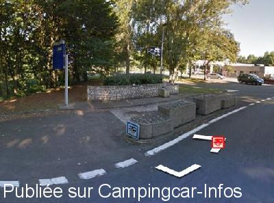

AA = Aire de services sur autoroute de :
A64 Bayonne=>Toulouse LACQ AUDEJOS
(N° 52)
Accès/adresse :
A 64
La Pyrénéenne
Sens Bayonne/Toulouse
La Pyrénéenne
Sens Bayonne/Toulouse
Latitude : (Nord) 43.421° Décimaux ou 43° 25′ 15′′
Longitude : (Ouest) -0.59851° Décimaux ou 0° 35′ 54′′
Tarif :
Services :


Autres informations :

Le 09/02/2016 par Aire de services
Aucun commentaire pour le moment